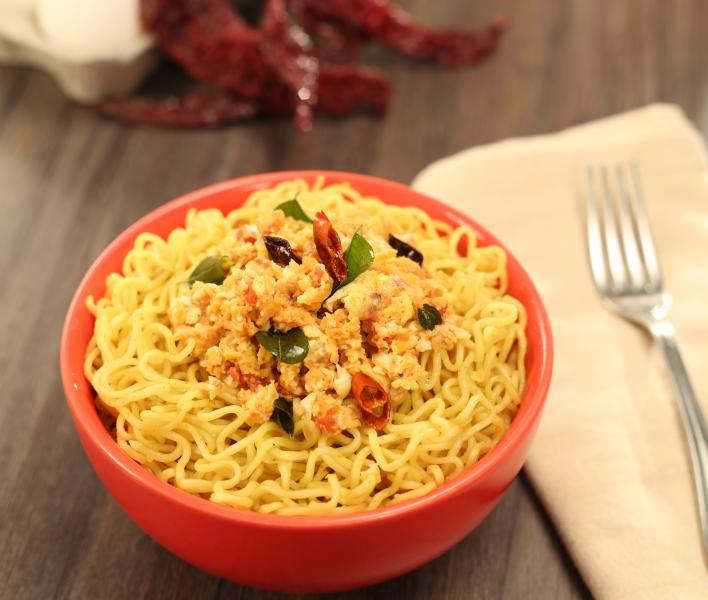

Maggi Noodles Egg Bhurji

Description
Maggi noodles meal with curry lemon egg bhurji, the perfect dinner and breakfast delight to an Indian family!
Ingredients
- MAGGI 2-Minute Noodles (Masala)
- Oil
- Onion (Finely Chopped)
- Tomato (Small, Chopped)
- Chilli Flakes
- Egg (Beaten)
- Curry Leaves
- Salt
Steps
- Heat the oil and sauté the onions until they are soft and light brown. Add tomato, red chillies and curry
leaves. Sauté, till the tomato has softened.
- Add the beaten eggs and mix well, using a fork to break the eggs into small pieces as they cook (like
scrambled eggs). Add salt to taste.
- Cook the MAGGI Masala Noodles as per pack instructions and add to the Egg Bhurji preparation. Mix well.
Serve hot, and kick start your family dinner party!